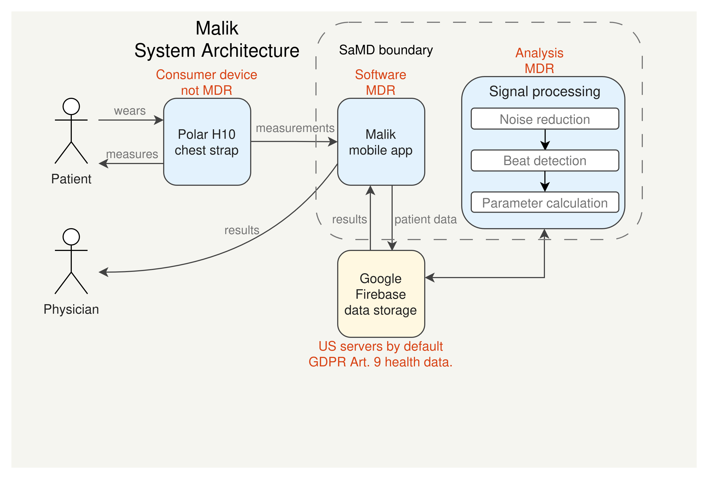
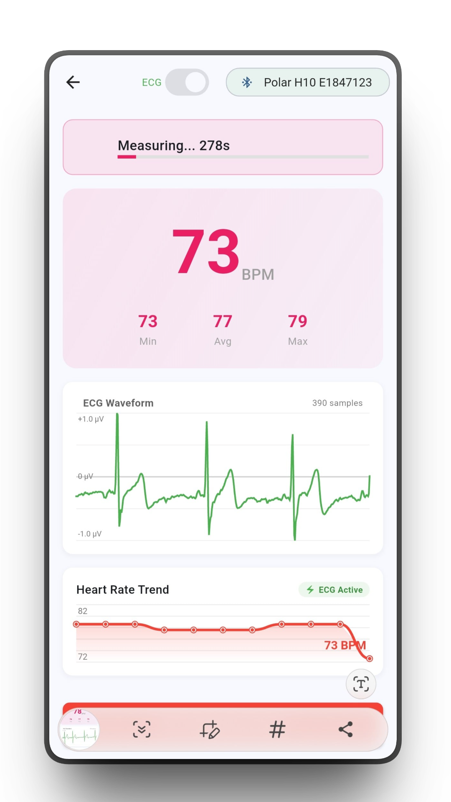
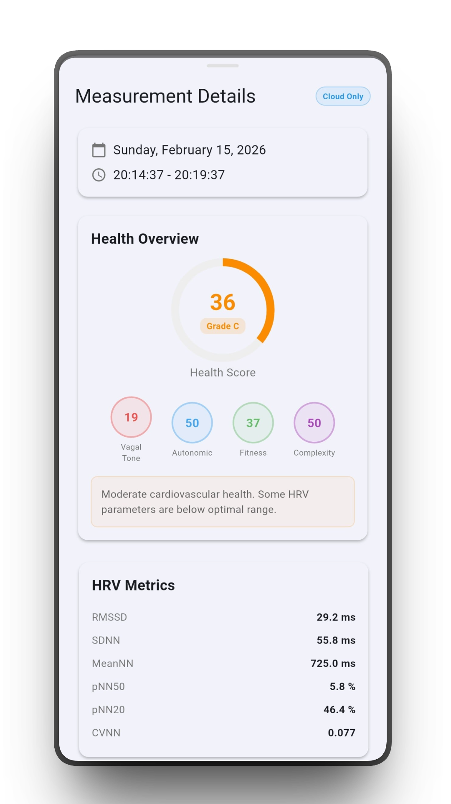

A mobile ECG acquisition and analysis app built in Flutter. The app pairs with a Polar H10
chest strap over Bluetooth to record 5-minute ECG sessions, uploads raw signals to a Google
Firebase backend, and runs a signal processing pipeline covering noise reduction, beat
detection, and HRV & cardiac parameter calculation. The project also documents the MDR
regulatory classification and compliance path for a Class IIa medical device under the EU
Medical Device Regulation.

System architecture: Polar H10 → BLE → Flutter app → Firebase backend → signal processing pipeline.

Measurement screen: live ECG trace streamed from the Polar H10 chest strap.

Results screen: HRV and cardiac parameters computed after session upload.
An end-to-end ML system for near-real-time intraoperative hypotension prediction built at
ID Information und Dokumentation Berlin GmbH as part of a doctoral research project
at Charité Universitätsmedizin Berlin. OR time-series streams are ingested via Kafka and
persisted to both TimeScaleDB and a FHIR store. A preprocessing and inference pipeline runs
through a Triton Model Server, with all components deployed as Docker containers.
An agentic LLM framework that closes the development loop between project manager, developer,
and tester roles. Mirash coordinates multiple LLM agents to automate iterative software
development tasks — planning, implementation, review, and testing — reducing the manual
overhead of the inner dev loop.
LLeMon
PythonLLMProduct LifecycleSKU Management
A SKU product lifecycle management tool that automates the full lifecycle of product stock
units — from creation through end-of-life — using structured LLM-assisted workflows.
Designed to reduce manual data entry and classification effort in inventory and procurement
contexts.